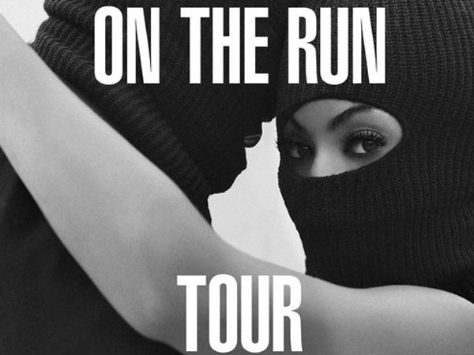

The start of her solo career
"The Recording Industry Association of America acknowledged Beyonce as the decade's top-selling artist in the 2000s based on the 64 gold and platinum certifications she received. In 2001 Beyonce became the first African-American female artist to win the annual American Society of Composers, Authors and Publishers Pop Songwriter of the Year award. The chart-topping artist has been married to rapper and record producer Jay-Z since April 4, 2008, and they have a daughter named Blue Ivy Carter; she was born on Jan. 7, 2012."
The first hit of her solo career was "Crazy in Love." featuring Jay-Z. Since 2005 she has released four albums: "Dangerously in Love","B-day"," I Am...Sasha Fierce"(two part album), and her most recent, self titled album "Beyonce". Beyonce has one 17 grammy's from 45 nominations. She has been nominated for 22 American Music Awards and won 9. She's won 16 BET Awards, 18 Billboard Music Awards, three NAACP Image awards, and 20 Soul Train music awards.
She and her husband(Jay-Z), are currently on their world tour called "On the Run".